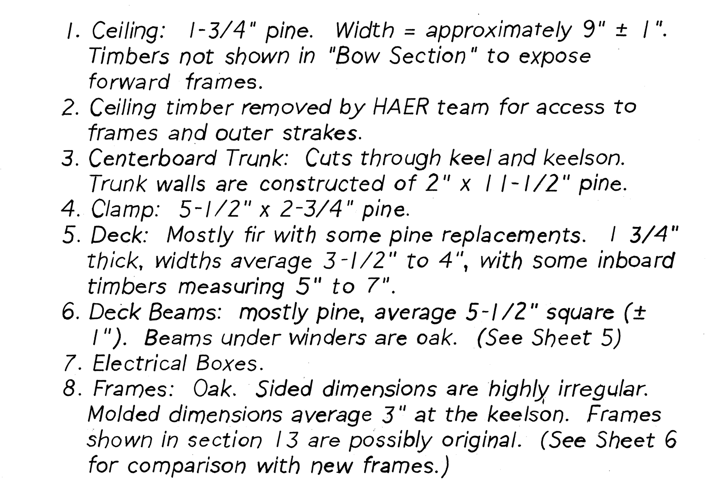

Original scan pixels: [7089, 5719, 10408, 7976]; source SHA-256: 8e1e32bd0608a3214c250e2ebe4090f44ca68c3d9cf1ebfc27482f0b40d4e683.
Native lossless view · Raw OCR · Word coordinates/confidence · Manifest

Ceiling: 1-3/4-inch pine, approximately 9 inches wide plus/minus 1 inch; omitted in bow section to expose frames.
Ceiling member removed by HAER team for access to frames and outer strakes. This is a survey-access condition, not proof of a permanent missing board.
Centerboard trunk cuts through keel and keelson. Walls constructed of 2 x 11-1/2-inch pine.
Clamp: 5-1/2 x 2-3/4-inch pine.
Deck mostly fir with pine replacements, 1-3/4-inch thick; usual widths 3-1/2 to 4 inches, some inboard 5 to 7 inches.
Deck beams mostly pine, average 5-1/2-inch square plus/minus 1 inch; oak under winders; see sheet 5 schedule.
Electrical boxes.
Frames: oak, highly irregular sided dimensions. Molded dimension averages 3 inches at keelson. Frames in section 13 are possibly original; compare newer frames on sheet 6.
|. Ceiling: 1-3/4" pine. Width = approximately 9" + |". Timbers not shown in "Bow Section" to expose — forward frames. 2. Ceiling timber removed by HAER team for access to frames and outer strakes. 3. Centerboard Trunk: Cuts through keel and keelson. Trunk walls are constructed of 2" x | /-1/2" pine. 4. Clamp: 5-172" x 2-3/4" pine. | | 5. Deck: Mostly fir with some pine replacements. | 3/4" thick, widths average 3-1/2" to 4", with some inboard timbers measuring 5" to 7". 6. Deck Beams: mostly pine, average 5-1/2" square (+ |"). Beams under winders are oak. (See Sheet 5) | /. Electrical Boxes. | 8. Frames: Oak. Sided dimensions are highly irregular. Molded dimensions average 3" at the keelson. Frames shown in section |3 are possibly original. (See Sheet 6 for comparison with new frames.) — |